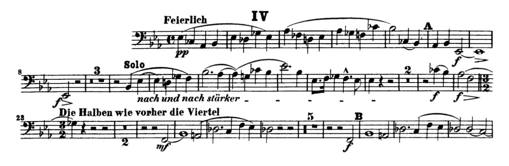

Schumann - Symphony No. 3
General Advice
This is one of the most common and difficult orchestral excerpts for bass trombone. Play this one soft, but not so soft that your sound loses its presence. Also, pay special attention to your intonation as you play in these softer dynamics. Finally, focus on very smooth note transitions and a fast slide. I recommend recording yourself and listening back to find areas for improvement.
Resources
Full Orchestra Excerpt Recording - Berliner Philharmoniker
Masterclass Breakdown with Thomas Leyendecker - Carnegie Hall